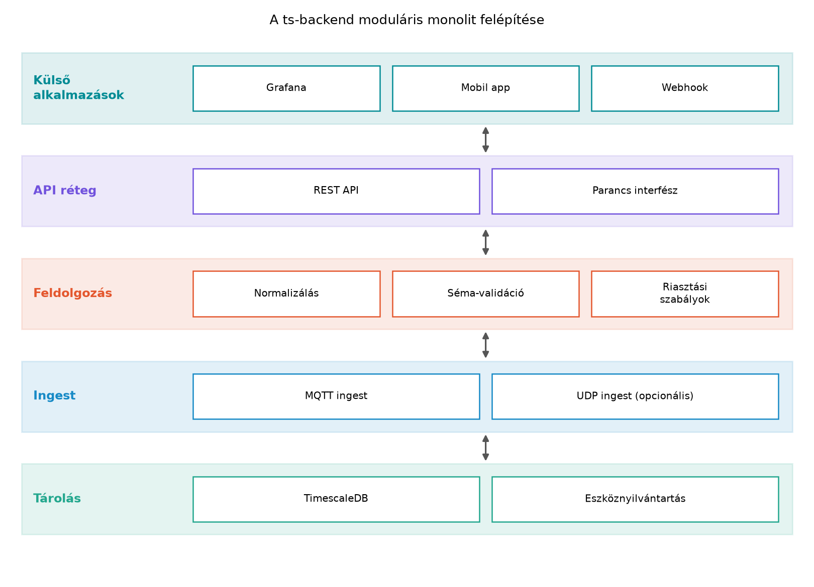

A TerraSense rendszerben a ts-node eszközök MQTT-n
keresztül publikálnak telemetriát, a ts-gw átjáró pedig ezt
a brokerbe továbbítja. A felhőben futó ts-backend feladata,
hogy az üzeneteket fogadja, feldolgozza, eltárolja, lekérdezhetővé
tegye, és szükség esetén értesítéseket küldjön. Emellett a rendszernek
parancsokat is el kell juttatnia az eszközökhöz, például szelep
nyitására. A backend tehát nem egyszerű adatfogadó, hanem a rendszer
központi idegrendszere, ahol az adat és a vezérlés találkozik. Az
alábbiakban felvázoljuk a backend logikai komponenseit, a köztük lévő
adatfolyamot, és azt a döntési keretet, amely alapján a TerraSense
esetén moduláris monolitot választunk mikroszolgáltatások helyett.
Az IoT-backend több logikai felelősséget hordoz. Ezeket érdemes külön modulként kezelni, még akkor is, ha kezdetben egyetlen futtatható egységben (monolitban) valósulnak meg.
Definíció. Ingest (beviteli réteg): az a komponens, amely a külső rendszerekből (jelen esetben MQTT brokerből, opcionálisan UDP-ből) érkező adatokat fogadja, protokoll-szintű dekódolást és kezdeti validációt végez, majd normalizált formában továbbítja a feldolgozó rétegnek.
Definíció. Feldolgozás (processing): az üzleti logika része, amely a bejövő eseményeket értelmezi, séma szerint validálja, szükség esetén szűri, gazdagítja, és kiváltja a levezetett eseményeket (például riasztásokat, parancs-válaszokat).
Definíció. Tárolás (storage): a perzisztencia réteg, amely felelős az idősoros adatok és az eszközök metaadatainak, állapotának megőrzéséért. A TerraSense-ben ez PostgreSQL + TimescaleDB.
Definíció. API (alkalmazásprogramozási felület): a kifelé nyújtott, jellemzően szinkron interfész, amelyen keresztül más alkalmazások (Grafana, mobil app, külső rendszerek) lekérdezhetik az adatokat és parancsokat küldhetnek.
Definíció. Értesítés (notification): a rendszerből kifelé irányuló aszinkron üzenetek, például riasztási e-mailek, webhookok, push értesítések.
Definíció. Eszköznyilvántartás (device registry): az eszközök regisztrációját, identitását, konfigurációját és aktuális állapotát kezelő modul.
Ezek a komponensek a következő adatfolyamban vesznek részt: az
eszközök az MQTT: publish/subscribe, broker,
topicok alfejezetben rögzített topic-konvenció szerint publikálnak a
terrasense/.../telemetry topicokra; a
ts-backend ingest modulja feliratkozik a brokerre, és
minden üzenetet továbbít a feldolgozó modulnak. A feldolgozó ellenőrzi a
séma szerinti érvényességet, majd a tároló rétegbe írja az idősoros
adatot. Az API modul a tárolóból olvas, és REST végpontokat biztosít. Az
értesítés modul a feldolgozás által kiváltott eseményeket juttatja el az
üzemeltetőkhöz. A lefelé irányuló parancsok az API-ból indulnak, és a
feldolgozáson keresztül MQTT publishként kerülnek a brokerre.
Az alábbi rétegábra a ts-backend komponenseit foglalja
össze.

Az ábra szöveges leírása: a legfelső rétegben a backendet használó alkalmazások vannak; ezek az API rétegen keresztül érhetik el az adatokat. Az API a feldolgozási logikát hívja, a feldolgozás az ingest és a tárolás között közvetít. Az ingest a brokerből érkező üzeneteket fogadja, a tárolás pedig a TimescaleDB-t és az eszköznyilvántartást fedi. A rétegek közötti függőség egyirányú: a felsőbb rétegek hívnak lefelé, a visszafelé irányuló kommunikáció eseményekkel vagy callbackekkel valósul meg.
A backend architektúrájának kiválasztása során az első kérdés a bevetési egység mérete: monolit, moduláris monolit vagy mikroszolgáltatások.
A monolit egyetlen folyamat, benne az összes komponenssel. Előnye az egyszerű fejlesztés és üzemeltetés, hátránya a nagyobb kódösszefonódás és a korlátozott skálázhatóság. A moduláris monolit ugyanígy egyetlen folyamat, de a belső komponensek világosan elhatárolt modulokba szervezettek, köztük szigorú függőségi szabályokkal. A mikroszolgáltatás-architektúra több függetlenül telepíthető szolgáltatásból áll, amelyek hálózaton keresztül kommunikálnak.
A gyakorlati tapasztalat – amelyet a szakirodalom is megerősít – az, hogy ne kezdj mikroszolgáltatásokkal, különösen akkor, ha a csapat kicsi, a domain határai még kiforratlanok, és a terhelés mérsékelt. A mikroszolgáltatások ugyanis jelentős operatív terhet hoznak (konténerorchesztráció, szolgáltatás-felfedezés, elosztott tranzakciók, naplózás és nyomkövetés), miközben a fejlesztési sebesség csökken. A moduláris monolit megtartja az egyszerű üzemeltetést, de a belső modulhatárok lehetővé teszik a későbbi szétválasztást, ha a skálázási vagy szervezeti igény úgy kívánja.
Az alábbi táblázat összefoglalja a kompromisszumokat:
| Szempont | Monolit | Moduláris monolit | Mikroszolgáltatások |
|---|---|---|---|
| Fejlesztési sebesség | Gyors | Gyors | Lassabb, több koordináció |
| Operatív komplexitás | Alacsony | Alacsony | Magas |
| Kódösszefonódás | Magas | Alacsony (szabályokkal) | Alacsony |
| Skálázhatóság | Korlátozott (vertikális) | Korlátozott, de modulhatárokkal | Független, horizontális |
| Hibaelkülönítés | Rossz | Jobb | Jó |
| Tranzakciókezelés | Könnyű (lokális) | Könnyű (lokális) | Nehéz (elosztott) |
| Ideális csapatméret | Kicsi | Kicsi–közepes | Nagy |
A TerraSense backendje a jelenlegi követelmények (egy laboratóriumi rendszer, néhány tucat eszköz, egy-két fejlesztő) alapján moduláris monolit legyen. Az eszközszám növekedésével az ingest és a feldolgozás szétválasztható, de erre a könyv keretein belül nincs szükség.
A második fontos döntés a szinkron és
aszinkron kommunikáció határainak kijelölése. Az
eszközök felől érkező telemetria természeténél fogva aszinkron: a broker
push-olja az üzeneteket, a backendnek nem kell választ adnia. Az ingest
és a feldolgozás közötti hívás kezdetben lehet szinkron (a feldolgozó
egyszerű metódus hívása), mert a terhelés kicsi, és ez egyszerűbbé teszi
a hibakezelést. Az API felé mutató interfész viszont szinkron REST, mert
a kliensek (Grafana, mobil) adatlekérdezést végeznek, és válaszra
várnak. A lefelé irányuló parancsok is szinkron kezdeményezésűek, de
maga a kézbesítés aszinkron MQTT-n történik; a parancs eredményét a
backend aszinkron módon, a cmd/result topicról kapja
meg.
A nem funkcionális követelmények leképezése:
A ts-backend moduláris monolit csomagszerkezete a
következő lehet:
ts-backend/
├── src/main/java/com/terrasense/backend/
│ ├── ingest/ # MQTT ingest, topic-feliratkozás, idempotencia
│ ├── processing/ # normalizálás, séma-validáció, riasztási szabályok
│ ├── storage/ # TimescaleDB repository, eszköznyilvántartó repository
│ ├── api/ # REST kontrollerek, DTO-k, parancs interfész
│ ├── notification/ # e-mail, webhook, riasztási csatornák
│ ├── deviceregistry/ # eszközök, konfiguráció, állapot
│ └── common/ # domain események, kivételek, idők, séma-verzió
└── pom.xmlA modulok közötti függőségi szabály: a common csomagot
mindenki használhatja; az ingest a
processing-ot hívja; a processing a
storage-ot és a notification-t; az
api a processing-ot és a
storage-ot; a deviceregistry a
storage-ot és a common-t. Az
ingest nem hívhat közvetlenül storage-ot, hogy
az idempotencia és a séma-kezelés a feldolgozásban maradjon.
Az adatfolyam a kidolgozott példában: a ts-node a
terrasense/gh1/n001/telemetry topicra küld egy
hőmérséklet-üzenetet. A Mosquitto továbbítja a ts-backend
ingest moduljának, amely feliratkozott a
terrasense/+/+/telemetry topicra. Az ingest ellenőrzi a
topic formátumát, majd a processing modulnak adja át. A
processing validálja a JSON/CBOR sémát, kinyeri az
eseményidőt és a mérési értékeket, majd a storage rétegbe
írja a TimescaleDB-be. Ezzel egyidejűleg, ha a hőmérséklet meghalad egy
küszöböt, a notification modul riasztást küld. A Grafana az
API modulon keresztül kérdezi le az idősoros adatokat.
Továbbvitt eredmény. A ts-backend
moduláris monolit architektúrájú, a fenti
csomagszerkezettel és modulhatárokkal. Ez a felépítés szolgál alapul a
JEE-ből Spring Bootba: fogalmi híd C/C++
fejlesztőknek alfejezetben bemutatott fogalmi átvezetéshez, a Ingest: MQTT-ből a backendbe, idempotensen
alfejezetben az ingest konkrét implementációjához, és a Felhős és nyílt forrású IoT-platformok: mikor építs,
mikor vásárolj alfejezetben a build vs. buy döntéshez. A modulok
elnevezése és a függőségi szabályok a későbbi laborokban is érvényesek,
ezért azokat nem szabad megváltoztatni.
Az architektúra helyességét nem futtatással, hanem
kódátvizsgálással és függőségi
elemzéssel lehet ellenőrizni. A Spring Boot alkalmazásban
például az ArchUnit vagy hasonló eszköz képes a csomagfüggőségi
szabályok betartását tesztelni. Kézzel is ellenőrizhető, hogy az
ingest csomag nem importál a storage-ból, és
az api nem hívja közvetlenül az MQTT klienst.
Tipikus hibatünetek és okok:
| Tünet | Ok | Javítás |
|---|---|---|
| Az ingest közvetlenül az adatbázisba ír, megkerülve a feldolgozást | A modulhatárok nem egyértelműek, vagy a fejlesztő sietett | Az adatbázis-hozzáférést csak a storage modulon
keresztül engedélyezzük, kódátvizsgálással és statikus elemzéssel |
| A backend szinkron MQTT hívást vár az eszköztől | A fejlesztő a REST mintát ültette át az eszközkommunikációra | Az eszköz felé irányuló parancsokat aszinkron módon, a
cmd topicon keresztül kezeljük |
| A monolit egyetlen óriási csomaggá nő, ahol minden függőség keresztezhető | A modulhatárokat nem tartják be | Az ArchUnit-tesztek és a rendszeres refaktorálás bevezetése |
| A mikroszolgáltatásokat túl korán vezetik be | A csapat túlértékeli a jövőbeli skálázási igényt | Vissza kell vonni a szolgáltatások számát, amíg a terhelés nem indokolja |
„Mikroszolgáltatásokkal kell kezdeni, mert az skálázható.” Ez a leggyakoribb félreértés. A mikroszolgáltatás-architektúra elsősorban szervezeti és skálázási problémát old meg, nem pedig a kezdeti fejlesztést gyorsítja. Kevés eszköz és kis csapat esetén a szolgáltatások szétválasztása csak növeli a komplexitást, és lassítja a szállítást. A moduláris monolit később is szétválasztható.
„A backend és az eszköz közötti kommunikáció legyen REST, mert az egyszerű.” Az eszköz hálózati megbízhatósága és az alvó üzemmódok miatt a REST nem megfelelő; az MQTT aszinkron publish/subscribe modellje sokkal jobban illeszkedik az IoT tűréshatáraihoz. A backend felől érkező parancsok is aszinkron módon, nyugtázással működnek, nem szinkron HTTP-hívásként.
„A feldolgozó modul közvetlenül a brokerhez csatlakozzon, ne az ingest modul.” Ezzel a modulhatárok elmosódnak, és a feldolgozási logika összekapcsolódik a protokollfüggő MQTT-klienssel. Később, ha új ingest csatornát (például CoAP vagy UDP) kell bevezetni, az egész feldolgozást módosítani kell.
(a) Fogalmi/döntési kérdés. Miért választunk a
TerraSense ts-backendjéhez moduláris monolitot
mikroszolgáltatások helyett? Sorolj fel legalább három indokot.
(b) Tervezési feladat. Tegyük fel, hogy a TerraSense rendszerben 100 eszköz működik, mindegyik percenként egy telemetria üzenetet küld. Számítsd ki az átlagos üzenetsebességet (üzenet/másodperc), és becsüld meg, hogy ez mekkora adatmennyiséget jelent naponta, ha egy üzenet átlagosan 200 bájt. Indokold meg, hogy ezen terhelés mellett szükség van-e az ingest modul külön folyamatba történő kiszervezésére, vagy elegendő a monolit folyamaton belüli szinkron hívás.
(c) Implementációs feladat (előkészíti a továbbvitt
eredményt). Hozd létre a
~/iot-labor/i041/ts-backend Spring Boot projektet a fenti
csomagszerkezettel. A projekt egyelőre üres osztályokat tartalmazzon a
modulok határvonalain. A pom.xml-ben add meg a Spring Boot
3.x szülőt és a minimális függőségeket. Ezt a vázat fogja felhasználni
az A ts-backend váza: REST API és
egészségellenőrzés alfejezet.
(d) Hibakeresési/kiterjesztési feladat. Új követelmény: a rendszernek támogatnia kell egy olyan eszköztípust, amely nem MQTT-n, hanem UDP-n küld telemetriát. Hol kell módosítani a moduláris monolit architektúrát? Melyik modul mit kap? Indokold, hogy miért nem kell megváltoztatni a feldolgozó és tároló modulokat.
(a) A moduláris monolit mellett szól: (1) kis csapat és laboratóriumi méret, ahol a mikroszolgáltatások operatív terhe nem térül meg; (2) a domain határok még kiforratlanok, így kockázatos lenne rögzíteni a szolgáltatáshatárokat; (3) a belső modulhatárok lehetővé teszik a későbbi szétválasztást, ha a terhelés nő; (4) a tranzakciókezelés lokális, nem kell elosztott tranzakciókkal foglalkozni.
(b) Az üzenetsebesség: 100 eszköz × 1 üzenet/perc = 100 üzenet/perc ≈ 1,67 üzenet/másodperc. Napi adatmennyiség: 100 × 60 × 24 × 200 bájt = 28 800 000 bájt = 28,8 MB. Ez nagyon alacsony terhelés, egyetlen monolit folyamat és szinkron hívás bőven elegendő. Az ingest külön folyamatba emelése csak legalább ezres nagyságrendű üzenetsebesség felett indokolt.
(c) A projekt létrehozása a
spring-boot-starter-web és a
spring-boot-starter-actuator függőségekkel. A csomagokat
üres osztályokkal, például IngestService,
ProcessingService, StorageService,
ApiController, NotificationService,
DeviceRegistryService nevekkel hozzuk létre. A
pom.xml a Spring Boot 3.x szülőt használja, a Java 21-es
verzióval. A pontos Maven-parancs és a teljes pom.xml az A ts-backend váza: REST API és egészségellenőrzés
alfejezetben kerül kidolgozásra, itt a váz felépítése a cél.
(d) Új UDP ingest csatorna esetén csak az
ingest modul bővül: hozzáadunk egy
UdpIngestService osztályt, amely az UDP csomagokat fogadja,
és ugyanazt a normalizált eseményt állítja elő, mint az MQTT ingest. A
processing, storage és a többi modul
változatlan marad, mert azok a normalizált eseményen dolgoznak, nem a
szállítási protokollon. Ez a modulhatárok előnye: a szállítási csatorna
hozzáadása nem érinti az üzleti logikát.
A TerraSense ts-backendje moduláris monolit
architektúrával épül fel. A logikai komponensek: ingest (MQTT bemenet),
feldolgozás (normalizálás, séma-validáció, riasztások), tárolás
(TimescaleDB, eszköznyilvántartás), API (REST), értesítés és
eszköznyilvántartás. A modulok határai egyirányú függőséget követnek, a
common csomag mindenki által használható. A döntés indoka a
kiscsapatos fejlesztés, az alacsony terhelés és a későbbi
szétválaszthatóság. Az eszköz felől érkező telemetria aszinkron, az API
szinkron. A ~/iot-labor/i041/ts-backend projekt a vázat
adja, amelyet az A ts-backend váza: REST API és
egészségellenőrzés alfejezet fejleszt tovább. Ezt a csomagstruktúrát
és modulhatárokat használják a JEE-ből Spring
Bootba: fogalmi híd C/C++ fejlesztőknek, Ingest:
MQTT-ből a backendbe, idempotensen és Felhős és
nyílt forrású IoT-platformok: mikor építs, mikor vásárolj
alfejezetek is.
https://docs.spring.io/spring-boot/ – a pontos verziók
(3.x, Java 21) ellenőrzési igényt jelentenek a későbbi
alfejezetekben.https://jakarta.ee/specifications/ – a JEE fogalmi híd
forrása.https://www.enterpriseintegrationpatterns.com/ – a szinkron
és aszinkron kommunikációs minták általános háttere.